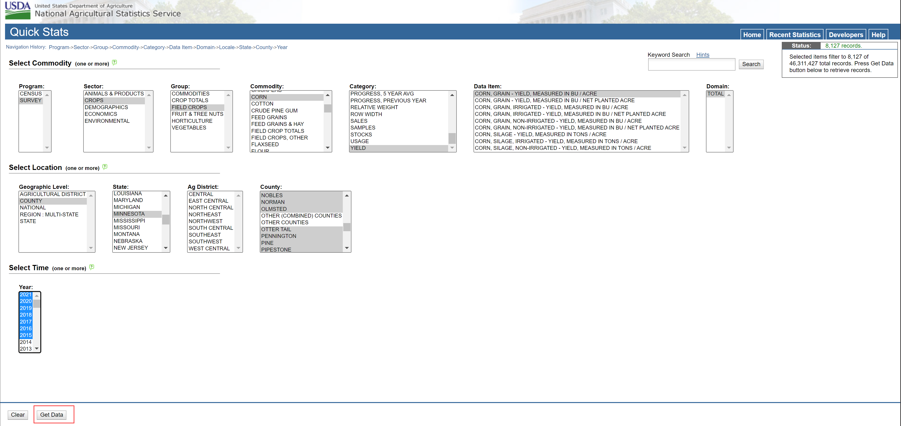

Soybean-corn rotation
This is data documentation for intercations between soybean-corn rotation and climates.
County-level data from United States Department of Agriculture (USDA)
We can access crop yield data via NASS website
Here is an example for geting corn yields:

Datasets from Google Earth Engine (GEE)
Paramter-elevation Regressions On Independent Slopes Model (PRISM)
The PRISM daily (AN81d) and monthly (AN81m) datasets are gridded climate datasets for the conterminous United States, produced by the PRISM Climate Group at Oregon State Univeristy.
Spatial resolution: 4638.3 meteres
Bands: Total precipitation, mean temperature, minimum temperature, maximum temperature, mean dew point temperature, minimum vapor pressure deficit, maximum vapor pressure deficit.
We can access these datasets via GEE code editor:
var dataset = ee.ImageCollection('OREGONSTATE/PRISM/AN81m')
.filter(ee.Filter.date('2018-07-01', '2018-07-31'));
var precipitation = dataset.select('ppt');
var precipitationVis = {
min: 0.0,
max: 300.0,
palette: ['red', 'yellow', 'green', 'cyan', 'purple'],
};
Map.setCenter(-100.55, 40.71, 4);
Map.addLayer(precipitation, precipitationVis, 'Precipitation');
TerraClimate
TerraClimate is a dataset of monthly climate and climatic water balance for global terrestril surfaces.
Spatial resolution: 4638.3 meters
Bands(normally used): precipitation accumulation, minimum temperature, maximum temperature, vapor pressure, vapor pressure deficit
var dataset = ee.ImageCollection('IDAHO_EPSCOR/TERRACLIMATE')
.filter(ee.Filter.date('2017-07-01', '2017-08-01'));
var maximumTemperature = dataset.select('tmmx');
var maximumTemperatureVis = {
min: -300.0,
max: 300.0,
palette: [
'1a3678', '2955bc', '5699ff', '8dbae9', 'acd1ff', 'caebff', 'e5f9ff',
'fdffb4', 'ffe6a2', 'ffc969', 'ffa12d', 'ff7c1f', 'ca531a', 'ff0000',
'ab0000'
],
};
Map.setCenter(71.72, 52.48, 3);
Map.addLayer(maximumTemperature, maximumTemperatureVis, 'Maximum Temperature');
USDA Crop data layer (CDL)
The Cropland Data Layer (CDL) is a crop-specific land cover data layer created annually for the continental United States using moderate resolution satellite imagery and extensive agricultural ground truth.
Spatial resolution: 30 meters
var dataset = ee.ImageCollection('USDA/NASS/CDL')
.filter(ee.Filter.date('2018-01-01', '2019-12-31'))
.first();
var cropLandcover = dataset.select('cropland');
Map.setCenter(-100.55, 40.71, 4);
Map.addLayer(cropLandcover, {}, 'Crop Landcover');